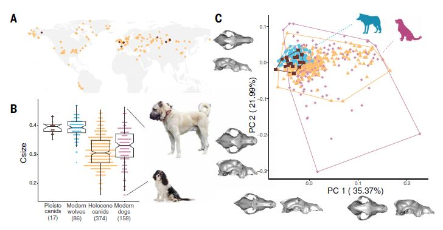

Science | 狗的形态演化：以狗头为例
一项发表在《科学》（Science）杂志上的研究，通过对643个犬科动物头骨进行三维形态测量分析，揭示了犬科哺乳动物在过去5万年间的形态演化历程。研究发现，狗的独特头骨形态大约在11,000年前首次出现，并且在全新世（Holocene）早期就已经展现出相当丰富的形态多样性——远远早于19世纪现代犬种通过人工选择形成的时期。
研究方法
研究团队采用三维几何形态测量学（3D geometric morphometrics）方法，对四类样本进行了系统分析：
- 17个晚更新世标本（Late Pleistocene，距今50,000-12,700年）
- 374个全新世考古标本（Holocene，距今11,700年以来）
- 86只现代狼
- 158只现代狗（包括47个品种、36只街头犬和22只混种犬）
研究通过测量头骨大小和形状变异，并开发了两步分析法来区分"形态学上的狗（morphological dogs）“和"形态学上的狼（morphological wolves）”。

关键发现
最早的确凿证据
研究确认，最早的"形态学狗"出现在俄罗斯中石器时代遗址Veretye（直接测年为11,145-10,724 cal BP），这与该遗址此前通过核基因组鉴定出的最古老狗基因证据相吻合。这些标本的头骨形态已经明显偏离了狼的形态范围。
晚更新世的"狗"都是狼
令人意外的是，所有17个晚更新世标本——包括此前被推测为早期狗的那些（如比利时Goyet洞穴标本）——在本次分析中全部被归类为"形态学上的狼"。这意味着，尽管狗的驯化可能始于更新世，但头骨形态的分化直到全新世初期才变得可检测。
早期狗已具多样性
研究显示，中石器时代至新石器时代的狗（37个标本）虽然头骨尺寸整体小于现代狗，且形态多样性约为现代狗的一半，但其形态变异已经超过了晚更新世狼群多样性的53%。这表明，早在现代犬种培育之前数千年，人类的选择压力就已经塑造出了相当多样的狗形态。
启示与展望
狗的驯化是一个绵延数千年的生物文化过程，远非一次性的"事件"。最早与人类共处的狗可能在很长时期内与狼在形态上难以区分，直到人类的选择压力导致头骨形态的显著变化。这项研究让我们更加理解人类最好朋友的演化历程——它们的形态多样性早在现代犬种诞生之前就已经开始萌发。
📌 参考阅读